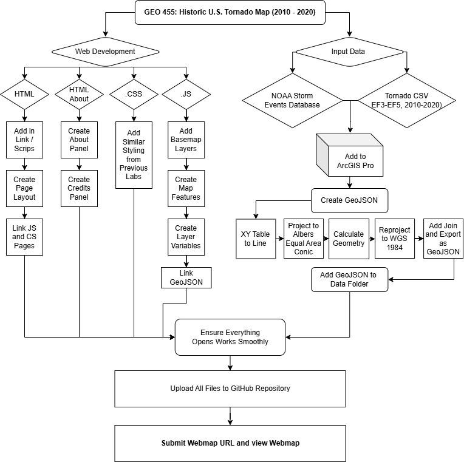

This interactive webmap explores the history of tornadoes rated EF3 - EF5 that have touched down across the United States. It has been designed as an educational tool for late elementary and middle school students, helping young learners understand the power, frequency, and distribution of large scale tornadoes across the U.S.
The map is made up of three thematic layers: Tornado Intensity (colored by EF scale rating), Tornado Frequency (a heatmap showing where tornadoes occur most often), and Tornado Impact (proportional symbols showing fatalities and injuries). A time slider allows users to filter tornadoes by year.
Tornadoes are one of the scariest and most powerful weather events for young students to experience in their learning. Many students learn about them, specifically "Tornado Alley", in school, and may be drawn to discovering more about these tunnels of terror. To add, the United States experiences more tornadoes than any other country on Earth, making this topic all the more relevent. It is important that students (and potential future Meteorologists) who wish to learn more about these natural disasters have the proper access in an interactive format.
The initial CSV data from the NOAA Storm Events Database was downloaded by decade and filtered to include only tornado events rated EF3, EF4, or EF5 between the years 2010 and 2020. Records missing start or end coordinates were removed, and column names were standardized to remove spaces and special characters prior to being brought into ArcGIS Pro.
Inside ArcGIS Pro, the XY Table to Line tool was used to convert each tornado's start and end coordinates into a line feature class. The feature class was then projected from its default geographic coordinate system into the Albers Equal Area Conic projection for calculating accurate distances for each tornado. Two new fields — length_m and length_mi — were calculated using Calculate Geometry to record each path's length in both meters and miles. The data was then reprojected back to WGS 1984 and exported as a GeoJSON file.
The workflow below outlines the full process for this project.

Several design decisions were made to ensure that the webmap was properly formatted for it's intended audience of Middle School Students.
Basemap Interactivity: The different basemap options were included to give the students different options for visual preference, as well as to allow better visuals of tornado paths that may be hard to see.
Three Distinct Thematic Layers: Rather than combining all information into one layer, the map separates tornado data into three distinct layers: Intensity, Frequency, and Impact This allows students to examine one concept at a time, so they are not overwhemled. However, multiple layers may be checked if the viewer would prefer to do so.
Sidebar Layout: The info panel is placed in a column on the right side of the page, as opposed to being overlaid on the map itself. This design choice was made to keep the entirety of the map visuable and avoid confusion. However, when a tornado is clicked, a popup shows with that tornado's information, adding interactivity to the map to keep students engaged. These info sections, such as the layout and the popups were added to allow students who are colorblind to still view this webmap.
Light Grey Information Pannels: The navbar and info panel use a light grey hexcode to create a slight but seemless visual separation between the information and the map itself. This draws the student's eye toward the map, since it is inteneded to be the main focal point.
This webmap includes four interactive elements designed to encourage student exploration and engagement.
GEO 455: Webmapping
University of Wisconsin - La Crosse